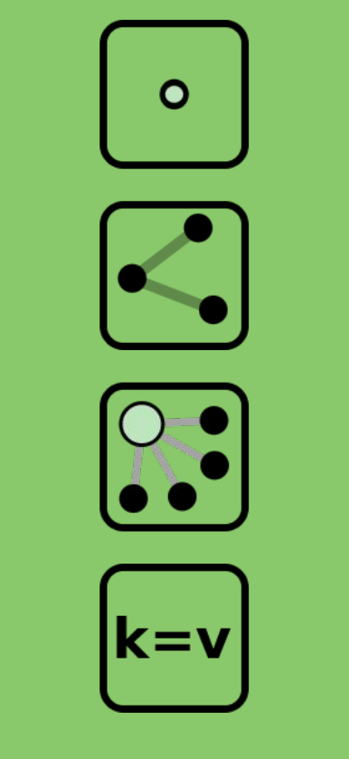
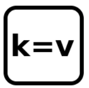
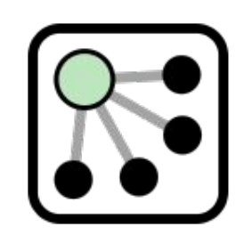

Databases for highway inventories
Proposal for a new model
María Castro Malpica
- Doctora Ingeniera de Caminos
- Profesora titular en @caminosupm
- Ingeniería civil:Transporte y territorio
- Research group: Highway engineering R & D
Santiago Higuera de Frutos

- Ingeniero de Caminos
- Profesor asociado en @caminosupm
- Matemáticas e Informatica
- Empresa: Mercatorlab S.L.
- Pensamiento Matemático
- OpenStreetMap
Inventory information levels
- Geometry and Topology
- Roadway characteristics
- Highway elements
Two kind of data models
- Information exchange
- LandXML
- GML
- EuroRoadS
- Inspire Specification on Transport Networks
- Proprietary software
- Commercial Inventory Software
- Spanish Highway Inventory
Proposal of this paper
- Non-SQL database
- It does not require previous design
- It starts with straightforward model
- Users build it in an incremental way
- Adaptable to any highway and any user
- Multilanguage
Geographic Information Components

- Spatial Component: Location and Geometry
- Thematic Component: Nature and Characteristics
And what about time as third component?
Basic Data Types
- Node
- Line
- Relation
- Tag

Tag: Unit of thematic information
Key - Value Pair
Examples:
- Highway = primary
- name = E-98
- slope = 0.04
Nodes
- Attributes
- Id
- Longitude, Latitude
- Content
- Tag's list
Example:
<node id="25496583" lat="51.5173639" lon="-0.140043">
<tag k="highway" v="traffic_signals"/>
<tag k="group" v="warning"/>
<tag k="code" v="es:P1"/>
</node>
Lines

- Attributes
- Id
- Content
- Node's list: referenced by Id
- Tag's list
Example:
<Line id="5090250">
<nd ref="822403"/>
<nd ref="21533912"/>
<nd ref="821601"/>
<tag k="highway" v="residential"/>
<tag k="name" v="Clipstone Street"/>
<tag k="oneway" v="yes"/>
</Line>
Closed Lines - Areas
If the first and last Node of a Line are the same node
- Closed Line
- Area
Tagging establishes the type of feature
Relations
Modeling complex elements

- Attributes
- Id
- Content
- Member's list: type, id, role
- Tag's list
Example:
<relation id="1">
<tag k="type" v="multipolygon" />
<member type="way" id="1" role="outer" />
<member type="way" id="2" role="inner" />
</relation>
Altitude
Altitude as thematic component
Altitude is a tag
This proposal is a 2.5 D model
Example:
<node id="25496583" lat="51.5173639" lon="-0.140043">
<tag k="altitude" v="960.0"/>
</node>
Linear Referencing
- ISO 19148: Geographic information — Linear referencing
- Locating feature: Relation Route
- Located features: Tagging
- Time located: Tagging
Database Schema Implementation
- Node, Line and Relation tables
- NodeLine table
- RelationMember table
- NodeTag,LineTag and RelationTag tables
Any relational database can store this schema
SQLITE for straightforward inventories and mobile solutions
XML as exchange format between apps
- World Wide Web Consortium Standard
- Easy to export to GIS formats (shp, GPX, KML)
- Easy to edit and modify
- Existing free tools: JOSM, QGIS, GDAL
Conclusions
- Open and known schema
- Easy to develop software tools
- Customizable for any interested agent
- Customizable for any kind of highway
- Incremental process
- Information is reusable
- XML enables information exchange
- Existing free tools
THE END
BY Santiago Higuera and María Castro
Esta obra está bajo una Licencia
Creative Commons Atribución-NoComercial-CompartirIgual
3.0 Unported.